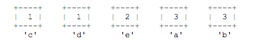
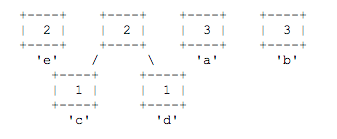
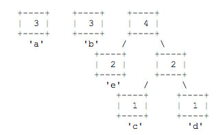

CSC143 - Java II
Computer Programming for Engineers and Scientists
Computer Programming for Engineers and Scientists
20 points
This program will give you practice with binary trees and priority queues. In this program you will explore how text files can be compressed by using a coding scheme based on the frequency of characters. We will use a coding scheme called Huffman coding. The basic idea is to abandon the way that text files are usually stored. Instead of using the usual seven or eight bits per character, Huffman's method uses only a few bits for characters that are used often, more bits for those that are rarely used.
You will solve this problem using a structure known as a priority queue. In a priority queue each value inserted into the queue has a priority that determines when it will be removed. There are many ways to specify the priorities. For this program you will construct objects that implement the Comparable interface, with objects that are less being given a higher priority (to be removed first).
The first step is to compute the frequency of each character in the file you wish to encode. This allows you to determine which characters should have the fewest bits, etc. The next step is to build a coding tree from the bottom up according to the frequencies. An example will help make this clear. To make the example easier, suppose we only want to encode the five letters (a, b, c, d, e) and they have frequencies 3, 3, 1, 1, and 2, respectively.
We first create a leaf node for each character/frequency pair and put them into a priority queue, so that the characters with lower frequencies appear first:
Now we pick the two nodes with the smallest frequencies (the two at the front of the priority queue) and create a new node with those two nodes as children (the first value from the queue becomes the left, the second value from the queue becomes the right). We assign this new branch node a frequency that is the sum of the frequencies of the two children. This new node is then put back into the priority queue: 
Continuing in this way, we build up larger and larger subtrees.
Here are the rest of the steps:
Note that the nodes with low frequencies end up far down in the tree, and nodes with high frequencies end up near the root of the tree. It turns out that this structural description is exactly what is needed to create an efficient encoding. The Huffman code is derived from this coding tree simply by assigning a zero to each left branch and a one to each right branch. The code can be read directly from the tree. The code for a is 10, the code for b is 11, the code for c is 010, the code for d is 011 and the code for e is 00.
An interesting feature of the Huffman code is that delimiters between characters are not stored, even though different characters may be coded with different numbers of bits. The key is that a code created by this method exhibits what is known as the prefix property, which means that no code for a character is the prefix of the code of any other character. Thus, to decode a message we need only traverse our tree. When we reach a leaf, we know that we have decoded one character, and can now start decoding the next character.
Part 1: Making a Code
For our purposes, we will encode what are known as bytes (1 byte = 8 bits). This will allow us to encode standard text files that use ASCII and binary files as well. From the point of view of your Huffman code, you can think about the individual bytes as simple integers in the range of 0 to 255, each representing the ASCII value of a particular character. In part 1, you are working with a program called MakeCode. It prompts the user for a file to examine and it computes the frequency of each character in the file. These counts are passed as an array to your HuffmanTree constructor.
The array passed to your constructor will have exactly 256 values in it, but your program should not depend on this. Instead, you can use the length field of the array to know how many there are. In your constructor, you should use a priority queue to build up the tree as described above. First you will add a leaf node for each character that has a frequency greater than 0 (we don?t include the other characters in our tree). These should be added in increasing character order (character 0, character 1, and so on).
Then you build the tree. Initially you have a bunch of leaf nodes. Your goal is to get a single tree. While you haven?t gotten down to a single tree, you remove two values from the priority queue and combine them to make a new branch node which you put back into the queue, as described above. You continue combining subtrees until you get down to one tree. This becomes your Huffman tree.
You are to define a class called HuffmanTree with the following public methods (more methods will be added in part 2 of this assignment):
|
Description |
|
|
HuffmanTree(int[] count) |
Constructs a Huffman tree using the given array of frequencies where count[i] is the number of occurrences of the character with ASCII value i. |
|
Writes the current tree to the given output stream in standard format. |
In defining your class, you will also define a node class called HuffmanNode. You may decide what data fields to include with this class.
In writing the tree, you should produce two lines of output for each character. The first line should have the ASCII value of the character. The second line should have the code (0's and 1's) for the character with this ASCII value. For the simple example above, the output would be (the letter a has ASCII value 97):
The codes should be written in traversal order. In other words, they should be written in the order that any standard traversal of the tree would visit them.
It turns out that Huffman coding works best if one character is designated as end of file, meaning that every file is guaranteed to end with such a character and it will be used for no other purpose. Some operating systems have such a character, but if we want to write a general-purpose program, we have to do something that is not specific to any one operating system. So in addition to encoding the actual characters that appear in the file, we will create a code for a fictitious end-of-file character that will be used only by the Huffman encoding and decoding programs. That means that in addition to all of the legal characters, you are also going to introduce a special character that will be used to signal end-of-file. We will refer to this as the ?pseudo-eof? character. Its value will be one higher than the value of the highest character in the frequency array passed to the constructor. It will always have a frequency of 1 because it appears exactly once at the end of each file to be encoded. You will have to manually add this character to your priority queue because it will not be included as part of the frequency array.
The output listed above does not include the pseudo-eof character. When you include the pseudo-eof character with a frequency of 1, the output becomes:
The java.util package includes a PriorityQueue<E> class that implements the Queue<E> interface. You must use these to build your Huffman tree. You can read the Java api description of them, but basically, they work like the Queue<E> interface we have seen before except for the fact that the enqueue method is called offer and the dequeue method is called remove. The interface includes the isEmpty and size methods we are used to having. The only difference between a priority queue and a standard queue is that it uses the natural ordering of the objects to decide which object to dequeue first, with objects considered less returned first. You are going to be putting subtrees into your priority queue, which means you?ll be adding values of type HuffmanNode. This means that your HuffmanNode class will have to implement the Comparable<E> interface. It should use the frequency of the subtree to determine its ordering relative to other subtrees, with lower frequencies considered less than higher frequencies. If two frequencies are equal, the nodes should be considered equal.
The Queue<E> interface in the java.util package is incompatible with the one we used earlier in the quarter, so be sure not to include the Queue.java and Queue.class files from the earlier assignment in the same directory as your Huffman solution.
The Huffman solution is not unique. You can obtain any one of several different equivalent trees depending upon how certain decisions are made. But if you implement it as we have specified, then you should get exactly the same tree. Make sure that you use the built-in PriorityQueue class and that when you are combining pairs of values taken from the priority queue, you make the first value removed from the queue the left subtree and you make the second value removed the right subtree.
You are being given two data files for this assignment called short.text and hamlet.text. The file short.txt is a short input file suitable for preliminary testing. The file hamlet.txt contains the full text of Shakespeare?s play Hamlet.
In terms of correctness, your class must provide all of the functionality described above. In terms of style, we will be grading on your use of comments, good variable names, consistent indentation and good coding style to implement these operations. Remember that you will lose points if you declare variables as data fields that can instead be declared as local variables. You should also avoid extraneous cases (e.g., don?t make something into a special case if it doesn?t have to be).
One java file needed for this part of the assignment is given: MakeCode.java. You will need to have MakeCode.java in the same directory as your files in order to run MakeCode. If your program runs correctly, you will get for the two text files that are given to you the following codes: short.code and hamlet.code.
Part 2: Encoding and Decoding a File
There are two new main programs that are used in this part of the assignment: Encode.java and Decode.java. You will also need BitInputStream.java, BitOutputStream.java. Recall that MakeCode.java examined an input file and produced a code file for compressing it. The program Encode.java uses this code and the original file to produce a binary file that is the compressed version of the original (Here is what you should get for the two text files that are given to you: short.short and hamlet.short). The program Decode.java uses the code and the binary file from Encode to reconstruct the original file. Encode is a complete program that doesn?t need the Huffman tree. Decode depends on your HuffmanTree class to do most of the work.
When complete, your Decode program should be able to take one of the short files (short.short or hamlet.short) and the corresponding code file (short.code or hamlet.code) to reconstruct the original file. (Warning: different operating systems, particularly windows and OS X, have different ways of representing the breaks between lines in a text file. The sample encoded files were created on a windows machine, and, when decoded properly, will produce a text file with correct windows line breaks. If you look at the output file or run the program on OS X there may be slight differences – in particular the byte counts might not be the same – even if your program is working properly. You can check by running your code on a windows box.)
To complete your Decode program , you will have to add two new methods to your HuffmanTree class:
|
Method |
Description |
|
HuffmanTree(Scanner input) |
Constructs a Huffman tree from the Scanner. Assumes the Scanner contains a tree description in standard format. |
|
void decode(BitInputStream input, PrintStream output, int eof) |
Reads bits from the given input stream and writes the corresponding characters to the output. Stops reading when it encounters a character with value equal to eof. This is a pseudo-eof character, so it should not be written to the output file. Assumes the input stream contains a legal encoding of characters for this tree?s Huffman code. |
The first of these methods is an alternative constructor. In part 1 you wrote a constructor that took an array of frequencies and constructed an appropriate tree given those frequencies. In this part you are given a Scanner that contains the file produced by your write method from part 1. In other words, the input for this part is the output you produced in part 1. You are using your own output to recreate the tree. For this second part, the frequencies are irrelevant because the tree has already been constructed once, but you are using the same node class as before. You can set all of the frequencies to some standard value like 0 or -1 for this part.
Remember that the standard format was a series of pairs of lines where the first line has an integer representing the character?s ASCII value and the second line has the code to use for that character. You might be tempted to call nextInt() to read the integer and nextLine() to read the code, but remember that mixing token-based reading and line-based reading is not simple. Here is an alternative that uses a method called parseInt in the Integer class that allows you to use two successive calls on nextLine():
int n = Integer.parseInt(input.nextLine());
String code = input.nextLine();
For the decoding part, you have to read a BitInputStream. This is a special class that is given. It works in conjunction with another class called BitOutputStream. They each have a very simple interface. They allow you to write and read compact sequences of bits.
The only method you?ll use for BitInputStream is the following method which returns the next bit from the file:
public int readBit()
Your method is doing the reverse of the encoding process. It is reading sequences of bits that represent encoded characters and it is figuring out what the original characters must have been. Your method should start at the top of your tree and should read bits from the input stream, going left or right depending upon whether you get a 0 or 1 from the stream. When you hit a leaf node, you know you?ve found the end of an encoded sequence. At that point, you should write the integer code for that character to the output file. In doing so, call this method from the PrintStream class:
public void write(int b)
You don?t need to cast to char. You just write the integer for this particular character (the value between 0 and 255 that is stored in this leaf). Once you've written this character's integer, you go back to the top of your tree and start over, reading more bits and descending the tree until you hit a leaf again. At that point you write again, go back to the top of the tree, read more bits and descend until you hit a leaf, then write the leaf, go back to the top of the tree, and so on.
Recognizing the end of the input will be tricky. Remember that we introduced a pseudo-eof character with a special value (256). The Encode method will write exactly one occurrence of this character at the end of the file. At some point your decoding method will come across this eof character. At that point it should stop decoding. It should not write this integer to the PrintStream because it isn't actually part of the original file. The eof value will be 256 for this particular program, but your code isn?t supposed to depend on this specific value, which is why it is passed to your decode method as the third parameter.
If you fail to recognize the pseudo-eof character, you might end up accidentally reading past the end of the bit stream. When that happens, the readBit method returns a value of -1. So if you see a value of -1 appearing, it's because you?ve read too far in the bit stream.
You will have to be careful if you use recursion in your decode method. Java has a limit on the stack depth you can use. For a file like hamlet.text, there are hundreds of thousands of characters to decode. That means it would not be appropriate to write code that requires a stack that is hundreds of thousands of levels deep. You might be forced to write some parts of this using a loop to make sure that you don't exceed the stack depth.
Of course, if you do it all with a loop in your decode method, you can ignore the above warning.
In terms of correctness, your class must provide all of the functionality described above. In terms of style, we will be grading on your use of comments, good variable names, consistent indentation and good coding style to implement these operations. Remember that you will lose points if you declare variables as data fields that can instead be declared as local variables. You should also avoid extraneous cases (e.g., don?t make something into a special case if it doesn't have to be).
You will have to turn in all of the java files that are in your project (even those that were given to you).
If you would like to read more about Huffman?s algorithm, there are many sources on the web including, for example, http://en.wikipedia.org/wiki/Huffman_tree